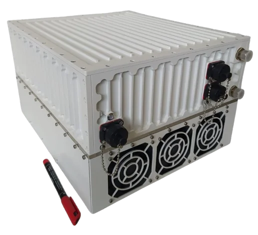
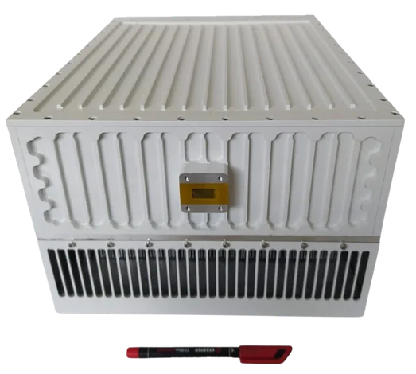
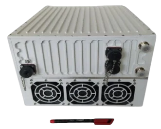

200W L-to-Ku Band Block Up Converter, GaN teknolojisi tabanlıdır. Yüksek verimli GaN solid-state tasarımı, zorlu ortamlarda büyük güç ve yüksek verim sağlar.
GANSAT-200WKU
| RF Frekans | 13.75 – 14.50 GHz |
| Yerel Osilatör | 12.80 GHz |
| Çıkış Gücü | 200W (+53.2 dBm) |
| IF Konnektör | N-type or F-type |
| Güç Kaynağı | 220V 50Hz AC, 1170W typ. |
| Çıkış Arayüzü | WR-75 G |
| Kazanç | 69 dB min, 75 dB nominal |
| IMD3 (Two Tones) | -26 dBc max. 2 signals 5 MHz apart at P-LINEAR |
| L.O. Leakage | -45 dBm max |
| Spurious | -50 dBc max |
| Spektral Büyüme | -30 dBc (QPSK at 1.5x and OQPSK at 1.0x symbol rate offset with 2dB back-off) |
| Dış Referans Gereksinimi | Via IF cable — 10 MHz (sine-wave), -5 to +5 dBm @ input port |
| TX Kazanç Varyasyonu / Sıcaklık Kararlılığı | ± 0.5 dB over 40 MHz / ± 1.8 dB over full band / ± 1.5 dB typ., ± 1.8 dB max. |
| Faz Gürültüsü | -55 dBc/Hz @ 10 Hz · -65 @ 100 Hz · -75 @ 1 kHz · -85 @ 10 kHz · -95 @ 100 kHz · -115 @ 1 MHz |
| Gürültü Güç Yoğunluğu TX / RX | -80 dBm/Hz (max) / -125 dBm/Hz (max) |
| Gürültü Faktörü | 15 dB max |
| Input / Output V.S.W.R. | 2:1 max |
| Mute | L.O. Kilit Kaybında SSPA Kapatma |
| Çalışma / Depolama Sıcaklığı | -40°C to +55°C / -55°C to +85°C |
| Boyutlar | 360 (L) × 320 (W) × 220 (H) mm — 14.2" × 12.6" × 8.65" |
| Ağırlık | 21.4 kg (47.1 lbs) max |
GANSAT-200WEXTKU
| RF Frekans | 13.75 – 14.75 GHz |
| Yerel Osilatör | 12.80 GHz |
| Çıkış Gücü | 200W (+53.2 dBm) |
| IF Konnektör | N-type or F-type |
| Güç Kaynağı | 220V 50Hz AC, 1170W typ. |
| Çıkış Arayüzü | WR-75 G |
| Kazanç | 69 dB min, 75 dB nominal |
| IMD3 (Two Tones) | -26 dBc max. 2 signals 5 MHz apart at P-LINEAR |
| L.O. Leakage | -45 dBm max |
| Spurious | -50 dBc max |
| Spektral Büyüme | -30 dBc (QPSK at 1.5x and OQPSK at 1.0x symbol rate offset with 2dB back-off) |
| Dış Referans Gereksinimi | Via IF cable — 10 MHz (sine-wave), -5 to +5 dBm @ input port |
| TX Kazanç Varyasyonu / Sıcaklık Kararlılığı | ± 0.5 dB over 40 MHz / ± 1.8 dB over full band / ± 1.5 dB typ., ± 1.8 dB max. |
| Faz Gürültüsü | -55 dBc/Hz @ 10 Hz · -65 @ 100 Hz · -75 @ 1 kHz · -85 @ 10 kHz · -95 @ 100 kHz · -115 @ 1 MHz |
| Gürültü Güç Yoğunluğu TX / RX | -80 dBm/Hz (max) / -125 dBm/Hz (max) |
| Gürültü Faktörü | 15 dB max |
| Input / Output V.S.W.R. | 2:1 max |
| Mute | L.O. Kilit Kaybında SSPA Kapatma |
| Çalışma / Depolama Sıcaklığı | -40°C to +55°C / -55°C to +85°C |
| Boyutlar | 360 (L) × 320 (W) × 220 (H) mm — 14.2" × 12.6" × 8.65" |
| Ağırlık | 21.4 kg (47.1 lbs) max |
GANSAT-200WKU, +53,2 dBm çıkış gücüyle teleport merkezleri, DTH yayın uplink istasyonları ve büyük VSAT hub'ları için yüksek bağlantı marjı sağlar. 220V AC beslemeli GaN solid-state tasarımı, zorlu dış ortam koşullarında -40°C ile +55°C arasında güvenilir çalışma sunar.
200W çıkışta GaN teknolojisi, yalnızca 1170W AC giriş gücüyle bu performansa ulaşır — eski nesil TWTA tasarımlarına kıyasla belirgin bir verimlilik avantajı.
200W Ku-Band GaN SSPA; teleport hub'ları, DTH yayın uplink istasyonları, büyük VSAT hub'ları ve devlet/savunma haberleşme bağlantıları gibi yüksek kapasiteli uydu uplink uygulamalarında kullanılır. Yüksek güç, daha büyük bağlantı marjı ve uyduda ya da zemin terminalinde daha küçük alıcı antenlerle çalışmayı mümkün kılar.
200W çıkışta GaN teknolojisi, GANSAT-200WKU'nun yalnızca 1170W AC giriş gücüyle +53,2 dBm elde etmesini sağlar — eski nesil TWTA tasarımlarına kıyasla önemli bir verimlilik avantajı. GaN cihazlar ayrıca -40°C ile +55°C arasındaki geniş sıcaklık aralığında RF performansında bozulma olmadan güvenilir şekilde çalışır.
Standart KU versiyonu 13,75–14,50 GHz'i kapsarken, Genişletilmiş KU versiyonu 13,75–14,75 GHz'e kadar çıkar. 200W çıkış gücünde genişletilmiş frekans aralığı, birden fazla uydu filo pozisyonuna hizmet eden operatörler için özellikle önemli olan tam Ku uplink bant tahsisine erişimi mümkün kılar.
Evet. GANSAT-200WKU'nun geniş çalışma sıcaklık aralığı (-40°C ile +55°C) ve solid-state güvenilirliği, uzun vadeli kullanılabilirlik ve servis edilebilirliğin kritik olduğu COTS savunma ve devlet uydu haberleşmesi uygulamalarına uygunluğu garanti eder.